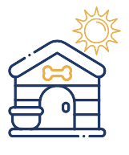

NUESTROS SERVICIOS

Cuidado Diurno
Ideal para quienes trabajan durante el día y necesitan que sus mascotas estén cuidadas mientras están ausentes.
- Duración: Hasta 7 horas durante el horario laboral.
- Incluye: Alimentación, juegos y supervisión personalizada.
- Servicio Extra: Paseo para perros.
Cuidado Nocturno
¿Tienes que salir y necesitas que alguien cuide a tu mascota durante la noche? Con nuestro servicio de Pet Sitting, cuidamos de tu mascota en la comodidad de su hogar.
- Incluye: Alimentación, tiempo de calidad y supervisión nocturna.
- Servicio Extra: Paseo para perros.

Visita al Hogar
¿Prefieres que alguien visite a tu mascota para asegurarse de que todo esté en orden? Nuestro servicio incluye:
- Revisión de comida y agua
- Limpieza de arenero para gatos
- Juegos y mimos para tu mascota
- Otras tareas que NO impliquen salir de casa
- Duración: 30 a 40 minutos
Si requiere un paseo, este tiene un costo adicional, pero ofrecemos un descuento especial al combinarlo.

Paseo para perros
Para mantener a tu perro activo y feliz, ofrecemos paseos personalizados:
- Duración: 30 a 45 minutos, ajustado a la energía de tu perro.
INFORMACIÓN ADICIONAL
- Si tu mascota es un cachorro, aplicamos un cargo extra debido al cuidado especial que requiere.
- Se realiza cobro de recargo por cada mascota adicional.